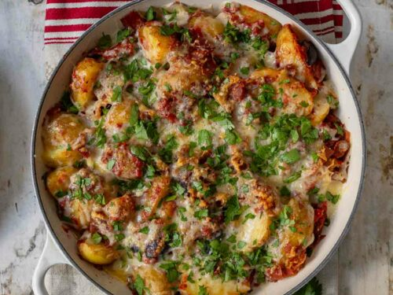

Kartoffelauflauf

This recipe is one of my favourites. Quick and easy and very tasty!
My Mediterranean potato casserole has what it takes to become your new favorite easy weeknight dish. Not only does it taste delicious, but it also has an incomparable Mediterranean flair. You can impress your guests or family with such a simple dish. The hearty Mediterranean flavors combined with the potatoes will put a satisfied smile on everyone's face.
Ingredients
- New young potatoes
- Parma ham and anchovies
- Dried tomatoes and Kalamata olives
- Gruyère-cheese
Steps
- Prepare the ingredients: Boil the potatoes and sauté the Parma ham, garlic and anchovies.
- Allow the flavors to simmer: Combine tomatoes with sun-dried tomatoes and olives to create a rich base.
- Assemble and bake: Place the potatoes in the tomato mixture, top with Parma ham and cheese and bake everything.
Home